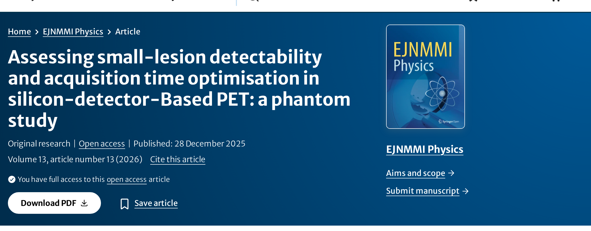

Assessing small-lesion detectability and acquisition time optimisation in silicon-detector-based PET: a phantom study
10.1186/s40658-025-00821-9Published in EJNMMI Physics, this phantom study assessed how silicon photomultiplier (SiPM) detector technology improves the detection of small lesions and enables shorter PET acquisition times. Using a modified NEMA IEC Body Phantom with additional sub-centimetre spheres, digital SiPM-based PET was compared with a conventional photomultiplier-tube (PMT) system. Lesions were detectable down to 4 mm in diameter, and an acquisition-time model linking lesion size and sphere-to-background ratio to scan duration demonstrated that comparable detectability could be maintained, with acquisition time reduced by between 1.6% and 89% depending on sphere size and uptake. The findings support shorter, tailored imaging protocols with potential benefits for patient throughput, comfort, and radiation exposure.